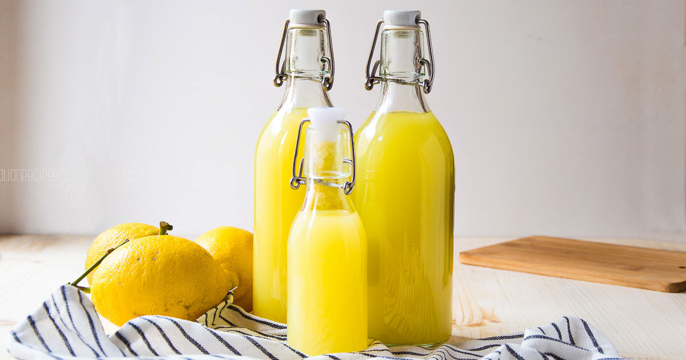

Limoncello

Description
I learned of this delicious concoction while vacationing in Naples last summer. My friends and I took a day trip to the region of Sorrento, a town known for having some of the world's best lemons. You can smell them in the air as you walk about the town! Although I'm not a big drinker, it seemed blasphemous to be surrounded by the Beyoncé of lemons and not grab a beverage or two. Let's just say, I do not regret my decision!
Being back in the states, those beautiful Italian lemons aren't so accessible. But that doesn't have to stop us from enjoying an amazing limoncello! Check out this recipe for the best limoncello on this side of the Atlantic.
Ingredients
- 1L Everclear Grain Alcohol
- 5 organic lemons
- 600g white granulated sugar
- 1.5L filtered water
Directions
- Scrub your lemons with a vegetable scrubber and water to remove any dirt or debris.
- Remove the peels the lemons, ideally without the pith, and place them in a mason jar.
- Pour the grain alcohol over the peels, close the jar, and give it a nice shake. Allow the peels to infuse into the alcohol for seven days.
- On the seventh day, combine the granulated sugar and water in pot over medium heat.
- Once the sugar has disolved, remove the pot from heat and pour the sugar-water mixture into the mason jar with the lemon peel infusion.
- Give the mixture a shake and allow it to sit for two days.
- After two days, remove the lemon peels by straining the limoncello through a collander or fine-mesh strainer.
- Bottle your limoncello and enjoy! This is best served chilled or over ice.
Thank you to Piatto Recipes for providing the base for this delicious recipe.